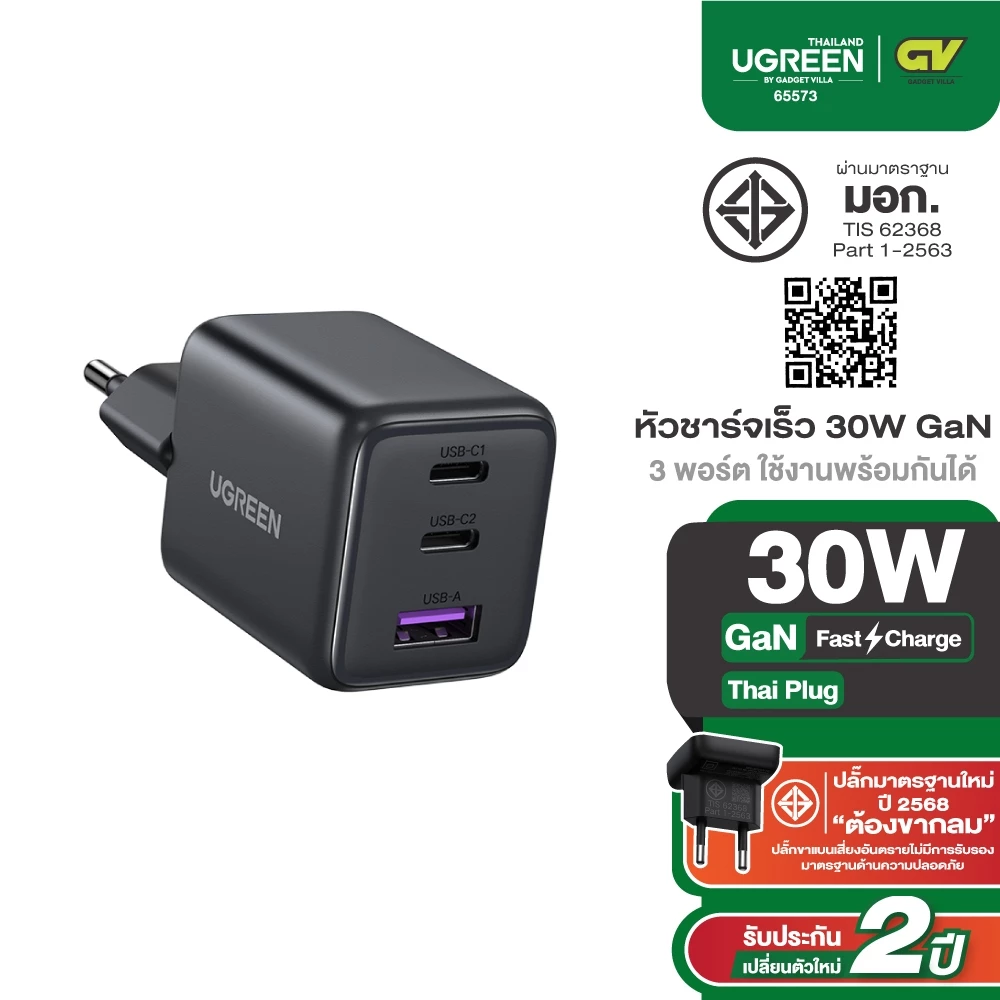

วางรูปสินค้าที่นี่1UGREEN X515 หัวชาร์จเร็ว 30-45W GaN 2 Port PD+USB
ราคา Shopee: 219 บาท
ถูกที่สุดในกลุ่ม และเป็นตัวเดียวในลิสต์ที่จ่ายไฟ 30-45W เหมาะกับมือถือและ Notebook บางเบา มี 3 พอร์ต (USB-C PD 2 ช่อง + USB-A 1 ช่อง) ชาร์จได้พร้อมกันสูงสุด 3 เครื่อง เทคโนโลยี GaN ทำให้ตัวเล็กกว่าหัวชาร์จปกติมาก
- กำลังไฟ30-45W (GaN)
- พอร์ตUSB-C PD x2 + USB-A x1 (รวม 3 พอร์ต)
- รองรับมือถือ, iPad, MacBook Air/Ultrabook บางรุ่น
- ขนาดเล็กกะทัดรัด (GaN Tech)
ข้อดี
- ราคาถูกที่สุดในกลุ่ม ไม่ถึง 220 บาท
- มี 3 พอร์ต ชาร์จได้พร้อมกันสูงสุด 3 เครื่อง
- ตัวเล็ก พกพาสะดวก
- UGREEN แบรนด์เชื่อถือได้
ข้อเสีย
- ไม่พอสำหรับ Notebook งานหนักหรือ MacBook Pro
- กำลังไฟรวมต้องแบ่งกันถ้าเสียบหลายพอร์ตพร้อมกัน
เหมาะสำหรับ: คนมีแค่มือถือ + iPad หรือ Notebook บางเบา ไม่ต้องการวัตต์สูง
ดูราคาล่าสุดบน Shopee →